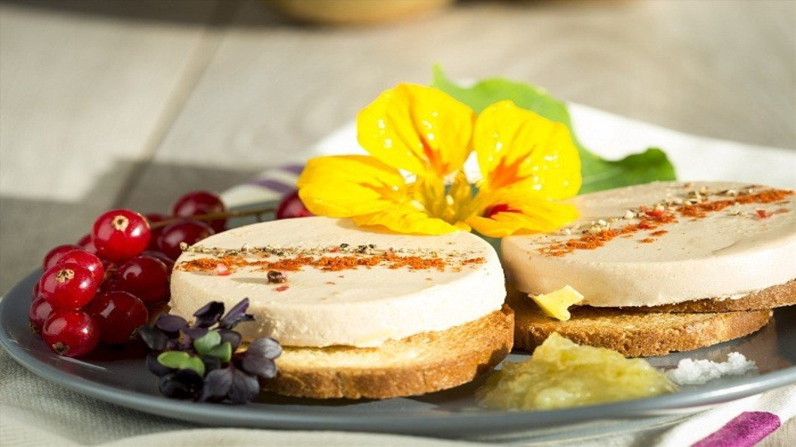

鵝肝醬因為在生產的過程中，用殘忍的方式灌食鵝隻，所以不少國家和城市都已經下禁令，不許販賣鵝肝醬。 法國的科學家為了保留這項傳統美食，研發了人道養鵝技術，可以不用再強迫灌食。 但「人道鵝肝醬」的滋味究竟如何？經過法國主廚盲測的結果，認為還是傳統鵝肝醬勝出。美國加州和紐約市，都已經下了鵝肝醬禁令，也衝擊了當地的養鵝業； 未來「人道鵝肝醬」或許可以成為養鴨業者的替代選擇，只不過在美味和價格上，還有改善的空間。

日本草莓蛋糕 遠百A13 KTV美食戰 心得